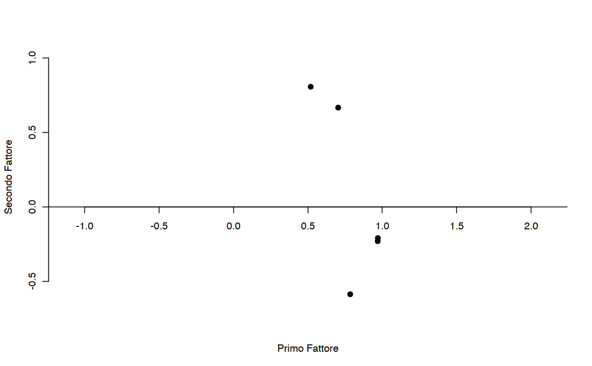
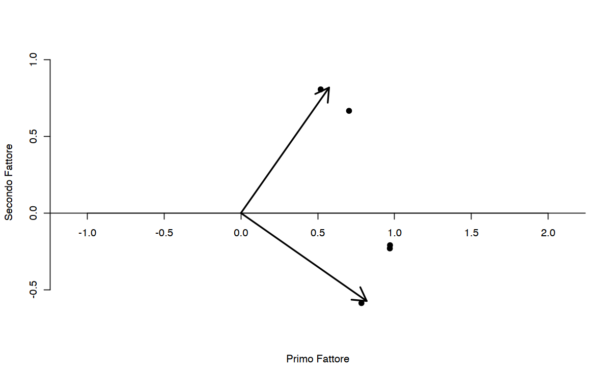

here::here("code", "_common.R") |>
source()
# Load packages
if (!requireNamespace("pacman")) install.packages("pacman")
pacman::p_load(lavaan, psych)Caricamento dei namespace richiesti: pacman
Prerequisiti
Concetti e Competenze Chiave
Preparazione del Notebook
here::here("code", "_common.R") |>
source()
# Load packages
if (!requireNamespace("pacman")) install.packages("pacman")
pacman::p_load(lavaan, psych)Caricamento dei namespace richiesti: pacman
Nel capitolo {ref}extraction-notebook abbiamo visto come sia possibile ottenere la soluzione fattoriale non ruotata per il numero di fattori comuni che meglio riassume l’informazione contenuta nella matrice di correlazioni (o covarianze). Tuttavia, questa soluzione non garantisce l’identificazione di gruppi omogenei e interpretabili di variabili osservate. Pertanto, si ricorre alla rotazione degli assi fattoriali per ottenere una soluzione più facilmente interpretabile rispetto a quella iniziale.
La necessità di effettuare la rotazione deriva dal fatto che la matrice delle saturazioni non ha un’unica soluzione. Attraverso trasformazioni matematiche, è possibile ottenere infinite matrici dello stesso ordine. Questo fenomeno è noto come indeterminatezza della soluzione fattoriale.
La matrice delle saturazioni fattoriali \(\boldsymbol{\Lambda}\) non è univocamente definita poiché non esiste una soluzione unica per determinare le saturazioni fattoriali. Una matrice di correlazioni \(\boldsymbol{R}\) può produrre diverse soluzioni fattoriali, ovvero matrici con lo stesso numero di fattori comuni ma con diverse configurazioni di saturazioni fattoriali, o matrici di saturazioni fattoriali corrispondenti a un diverso numero di fattori comuni.
Esempio. Siano \(\boldsymbol{\Lambda}_1\) e \(\boldsymbol{\Lambda}_2\) due matrici aventi lo stesso numero di righe e colonne, ma contenenti saturazioni fattoriali diverse. \(\boldsymbol{\Lambda}_1\) è definita dai valori seguenti
l1 <- matrix(
c(
0.766, -0.232,
0.670, -0.203,
0.574, -0.174,
0.454, 0.533,
0.389, 0.457,
0.324, 0.381
),
byrow = TRUE, ncol = 2
)mentre per \(\boldsymbol{\Lambda}_2\) abbiamo
l2 <- matrix(
c(
0.783, 0.163,
0.685, 0.143,
0.587, 0.123,
0.143, 0.685,
0.123, 0.587,
0.102, 0.489
),
byrow = TRUE, ncol = 2
)Esaminiamo la matrice delle correlazioni riprodotte dalle due matrici di pesi fattoriali (con le comunalità sulla diagonale di \(\boldsymbol{R}\)):
l1 %*% t(l1) |> round(2)| 0.64 | 0.56 | 0.48 | 0.22 | 0.19 | 0.16 |
| 0.56 | 0.49 | 0.42 | 0.20 | 0.17 | 0.14 |
| 0.48 | 0.42 | 0.36 | 0.17 | 0.14 | 0.12 |
| 0.22 | 0.20 | 0.17 | 0.49 | 0.42 | 0.35 |
| 0.19 | 0.17 | 0.14 | 0.42 | 0.36 | 0.30 |
| 0.16 | 0.14 | 0.12 | 0.35 | 0.30 | 0.25 |
l2 %*% t(l2) |> round(2)| 0.64 | 0.56 | 0.48 | 0.22 | 0.19 | 0.16 |
| 0.56 | 0.49 | 0.42 | 0.20 | 0.17 | 0.14 |
| 0.48 | 0.42 | 0.36 | 0.17 | 0.14 | 0.12 |
| 0.22 | 0.20 | 0.17 | 0.49 | 0.42 | 0.35 |
| 0.19 | 0.17 | 0.14 | 0.42 | 0.36 | 0.30 |
| 0.16 | 0.14 | 0.12 | 0.35 | 0.30 | 0.25 |
Come si vede, viene ottenuto lo stesso risultato utilizzando matrici \(\boldsymbol{\Lambda}\) con lo stesso numero \(m\) di colonne ma saturazioni fattoriali diverse.
Si consideri ora il caso di matrici \(\boldsymbol{\Lambda}\) corrispondenti a soluzioni fattoriali con un diverso numero di fattori comuni. Siano \(\boldsymbol{\Lambda}_1\) e \(\boldsymbol{\Lambda}_2\) due matrici aventi lo stesso numero di righe ma un numero diverso di colonne:
l1 <- matrix(
c(
0.9,
0.7,
0.5,
0.3
),
byrow = TRUE, ncol = 1
)
l2 <- matrix(
c(
0.78, 0.45,
0.61, 0.35,
0.43, 0.25,
0.25, 0.15
),
byrow = TRUE, ncol = 2
)Si noti che la stessa matrice di correlazioni riprodotte (con le comunalità sulla diagonale principale) viene generata dalle saturazioni fattoriali corrispondenti ad un numero diverso di fattori comuni:
l1 %*% t(l1) |> round(2)| 0.81 | 0.63 | 0.45 | 0.27 |
| 0.63 | 0.49 | 0.35 | 0.21 |
| 0.45 | 0.35 | 0.25 | 0.15 |
| 0.27 | 0.21 | 0.15 | 0.09 |
l2 %*% t(l2) |> round(2)| 0.81 | 0.63 | 0.45 | 0.26 |
| 0.63 | 0.49 | 0.35 | 0.20 |
| 0.45 | 0.35 | 0.25 | 0.14 |
| 0.26 | 0.20 | 0.14 | 0.08 |
Per ottenere risultati affidabili dall’analisi fattoriale, si affronta il problema dell’indeterminazione fattoriale scegliendo la soluzione che soddisfa due criteri fondamentali: il criterio della parsimonia e il criterio della semplicità.
Il criterio della parsimonia richiede di scegliere il modello con il minor numero di fattori comuni che può spiegare la covarianza tra le variabili. In pratica, se ci sono due soluzioni fattoriali con un diverso numero di fattori che riproducono allo stesso modo la matrice di covarianza o di correlazione, si sceglie quella con il minor numero di fattori.
In caso invece ci siano diverse soluzioni fattoriali con lo stesso numero m di fattori, il criterio della semplicità guida nella scelta della trasformazione più appropriata della matrice di saturazioni fattoriali \(\boldsymbol{\Lambda}\). Questa trasformazione, nota come rotazione, cerca di rendere i fattori più interpretabili. Ci sono due tipi di rotazione: ortogonale e obliqua.
La rotazione ortogonale assume che i fattori siano incorrelati, mentre la rotazione obliqua consente correlazioni tra i fattori. L’obiettivo della rotazione è di trovare una soluzione che renda i fattori più facilmente interpretabili e, quindi, in grado di spiegare meglio i dati.
L’analisi fattoriale impiega la rotazione degli assi fattoriali per ottenere una “struttura semplice” nella matrice delle saturazioni fattoriali. Questo criterio, proposto originariamente da Thurstone nel 1947, mira a realizzare una matrice caratterizzata da un numero limitato di saturazioni (o carichi fattoriali) significative e diverse da zero, minimizzando al contempo la presenza di variabili influenzate da più di un fattore.
Per raggiungere una struttura semplice, Thurstone ha delineato specifiche condizioni che la matrice fattoriale ruotata deve soddisfare: 1. Ogni variabile deve presentare saturazioni nulle con la maggior parte dei fattori, escludendo uno o pochi con cui mostra saturazioni significative. 2. Per ciascun fattore, devono esistere almeno \(m\) saturazioni nulle, dove \(m\) è il numero totale di fattori comuni.
L’obiettivo della rotazione è quindi massimizzare il numero di saturazioni nulle o quasi nulle, facilitando l’interpretazione dei fattori. Analizzando la matrice ruotata, è possibile identificare le variabili che sono fortemente associate a specifici fattori e valutare l’intensità di tali associazioni.
Un fattore si interpreta efficacemente quando i suoi carichi sono elevati e positivi su un gruppo ristretto di variabili; ciò suggerisce che il fattore rappresenta un tratto o una caratteristica comune a tali variabili. Tuttavia, l’interpretazione diventa più complessa quando le variabili presentano saturazioni significative con più di un fattore, poiché indica la presenza di sovrapposizioni nelle influenze fattoriali.
Come precedentemente osservato, la matrice delle saturazioni fattoriali non è unica, implicando l’esistenza di multiple soluzioni equivalenti per determinare i pesi fattoriali. La rotazione ortogonale è un tipo di trasformazione lineare applicata ai pesi fattoriali per produrre una nuova matrice di saturazioni fattoriali che rispetti criteri specifici di struttura semplice. Questo processo ha lo scopo di rendere i dati più facilmente interpretabili.
Geometricamente parlando, la rotazione ortogonale è simile a una rotazione rigida degli assi in uno spazio cartesiano che rappresenta i pesi fattoriali. Tale rotazione conserva le distanze tra i punti (che rappresentano le saturazioni fattoriali) ma modifica la loro posizione relativa rispetto ai fattori. Di conseguenza, si ottiene una configurazione dei pesi fattoriali che è più semplice da interpretare.
Le tecniche di rotazione ortogonale sono tipicamente implementate attraverso metodi come la massima verosimiglianza o l’analisi dei componenti principali, con l’obiettivo di massimizzare il numero di saturazioni nulle o quasi nulle nella matrice delle saturazioni risultante. Questo processo aiuta a chiarire quale variabile è influenzata maggiormente da quali fattori, facilitando l’interpretazione dei risultati dell’analisi fattoriale.
Il problema della non identificabilità della matrice dei pesi fattoriali, denotata come \(\hat{\boldsymbol{\Lambda}}\), indica l’esistenza di molteplici matrici equivalenti che possono produrre identiche correlazioni tra le variabili di un modello. Per affrontare questa questione, è essenziale imporre vincoli sulla rotazione dei fattori. Uno dei criteri fondamentali nella scelta del tipo di rotazione è l’ottenimento di una matrice \(\hat{\boldsymbol{\Lambda}}\) semplificata, i cui elementi si avvicinano il più possibile ai valori 0 e 1. Questo facilita l’interpretazione dei fattori come combinazioni lineari delle variabili.
Le rotazioni ortogonali, utili in presenza di fattori non correlati, mantengono inalterate le comunalità, poiché conservano le distanze geometriche tra i punti rappresentati dai pesi fattoriali. In questo caso, le comunalità sono calcolate come la somma dei quadrati dei pesi fattoriali. Al contrario, le rotazioni non ortogonali modificano la quota di varianza spiegata da ciascun fattore, calcolata dalla somma dei quadrati dei pesi fattoriali divisa per la traccia della matrice di correlazione.
Esistono vari algoritmi per eseguire la rotazione ortogonale dei fattori, tra cui il metodo grafico, il metodo Quartimax e il metodo Varimax. Ciascuno di questi metodi ha specifiche applicazioni e impatti sulla struttura della matrice risultante, facilitando così l’interpretazione dei dati analizzati.
Quando si dispone di soli $ m=2 $ fattori, il sistema di coordinate bidimensionale è utilizzato per rappresentare geometricamente i fattori. La visualizzazione grafica delle saturazioni fattoriali permette di determinare visivamente la rotazione più appropriata. Ogni riga della matrice \(\hat{\boldsymbol{\Lambda}}\) rappresenta un paio di pesi fattoriali, \(\hat{\lambda}_{i1}, \hat{\lambda}_{i2}\), con \(i=1, \dots, p\), che corrispondono alle coordinate di \(p\) punti (equivalenti al numero di variabili manifeste). Per ottimizzare la rappresentazione, gli assi vengono ruotati di un angolo \(\phi\) per avvicinarli il più possibile alla disposizione dei punti sul grafico. Le nuove coordinate \((\hat{\lambda}_{i1}^*, \hat{\lambda}_{i2}^*)\) sono calcolate mediante la trasformazione \(\hat{\boldsymbol{\Lambda}}^* = \hat{\boldsymbol{\Lambda}} \textbf{T}\), dove
\[ \textbf{T} = \begin{bmatrix} \cos{\phi} & -\sin{\phi}\\ \sin{\phi} & \cos{\phi} \end{bmatrix} \]
è una matrice ortogonale \(2 \times 2\).
Esempio: Consideriamo un caso studiato da Brown, Williams e Barlow (1984), analizzato in {cite:t}rencher10methods. A una ragazza di dodici anni è stato chiesto di valutare sette suoi conoscenti su cinque attributi: gentilezza, intelligenza, felicità, simpatia e giustizia. Per queste variabili, la matrice di correlazione \(R\) è stata analizzata per estrarre due fattori mediante il metodo delle componenti principali, senza rotazione iniziale:
R <- matrix(
c(
1.00, .296, .881, .995, .545,
.296, 1.000, -.022, .326, .837,
.881, -.022, 1.000, .867, .130,
.995, .326, .867, 1.000, .544,
.545, .837, .130, .544, 1.00
),
ncol = 5, byrow = TRUE, dimnames = list(
c("K", "I", "H", "L", "J"), c("K", "I", "H", "L", "J")
)
)
print(R) K I H L J
K 1.000 0.296 0.881 0.995 0.545
I 0.296 1.000 -0.022 0.326 0.837
H 0.881 -0.022 1.000 0.867 0.130
L 0.995 0.326 0.867 1.000 0.544
J 0.545 0.837 0.130 0.544 1.000Dalla matrice \(R\), estraiamo due fattori. Si osserva che i fattori risultano difficili da interpretare: il primo fattore mostra alte saturazioni positive su tutte le variabili manifeste, mentre il secondo fattore si caratterizza per alte saturazioni positive su una variabile e negative sulle altre.
f.pc <- principal(R, 2, rotate = FALSE)
f.pcSpecified rotation not found, rotate='none' used
Principal Components Analysis
Call: principal(r = R, nfactors = 2, rotate = FALSE)
Standardized loadings (pattern matrix) based upon correlation matrix
PC1 PC2 h2 u2 com
K 0.97 -0.23 0.99 0.0067 1.1
I 0.52 0.81 0.92 0.0792 1.7
H 0.78 -0.59 0.96 0.0391 1.9
L 0.97 -0.21 0.99 0.0135 1.1
J 0.70 0.67 0.94 0.0597 2.0
PC1 PC2
SS loadings 3.26 1.54
Proportion Var 0.65 0.31
Cumulative Var 0.65 0.96
Proportion Explained 0.68 0.32
Cumulative Proportion 0.68 1.00
Mean item complexity = 1.6
Test of the hypothesis that 2 components are sufficient.
The root mean square of the residuals (RMSR) is 0.03
Fit based upon off diagonal values = 1In un grafico delle saturazioni fattoriali, i punti rappresentano le cinque coppie di saturazioni (una per ciascun fattore):
plot(
f.pc$load[, 1], f.pc$load[, 2],
bty = "n", xaxt = "n",
xlab = "Primo Fattore", ylab = "Secondo Fattore",
ylim = c(-.6, 1), xlim = c(0, 1), pch = 19, asp = 1
)
axis(1, pos = c(0, 0))
abline(0, 0)
Rencher (2002) suggerisce che una rotazione ortogonale di \(-35^\circ\) avvicinerebbe efficacemente gli assi ai punti nel diagramma di dispersione. Per verificarlo, si può disegnare i nuovi assi nel grafico dopo una rotazione di \(-35^\circ\).
plot(
f.pc$load[, 1], f.pc$load[, 2],
bty = "n", xaxt = "n",
xlab = "Primo Fattore", ylab = "Secondo Fattore",
ylim = c(-.6, 1), xlim = c(0, 1), pch = 19, asp = 1
)
axis(1, pos = c(0, 0))
abline(0, 0)
ar <- matrix(c(
0, 0,
0, 1,
0, 0,
1, 0
), ncol = 2, byrow = TRUE)
angle <- 35
rad <- angle * pi / 180
T <- matrix(c(
cos(rad), -sin(rad),
sin(rad), cos(rad)
), ncol = 2, byrow = TRUE)
round(ar %*% T, 3)
arrows(0, 0, 0.574, 0.819, lwd = 2)
arrows(0, 0, 0.819, -0.574, lwd = 2)| 0.000 | 0.000 |
| 0.574 | 0.819 |
| 0.000 | 0.000 |
| 0.819 | -0.574 |

Nella figura, le due frecce rappresentano gli assi ruotati. La rotazione di \(-35^{\circ}\) ha effettivamente avvicinato gli assi ai punti del diagramma. Se usiamo dunque il valore \(\phi = -35^{\circ}\) nella matrice di rotazione, possiamo calcolare le saturazioni fattoriali della soluzione ruotata \(\hat{\boldsymbol{\Lambda}}^* = \hat{\boldsymbol{\Lambda}} \textbf{T}\).
Le saturazioni fattoriali ruotate corrispondono alla proiezione ortogonale dei punti sugli assi ruotati:
angle <- -35
rad <- angle * pi / 180
T <- matrix(c(
cos(rad), -sin(rad),
sin(rad), cos(rad)
), ncol = 2, byrow = TRUE)
round(f.pc$load %*% T, 3)| K | 0.927 | 0.367 |
| I | -0.037 | 0.959 |
| H | 0.980 | -0.031 |
| L | 0.916 | 0.385 |
| J | 0.194 | 0.950 |
La soluzione ottenuta in questo modo riproduce quanto riportato da {cite:t}rencher10methods.
Un tipo di rotazione ortogonale spesso utilizzata è la rotazione Varimax (Kaiser, 1958). La matrice \(\hat{\boldsymbol{\Lambda}}\) è semplificata in modo tale che le varianze dei quadrati degli elementi \(\lambda_{ij}\) appartenenti a colonne diverse di \(\hat{\boldsymbol{\Lambda}}\) siano massime. Se le saturazioni fattoriali in una colonna di \(\hat{\boldsymbol{\Lambda}}\) sono simili tra loro, la varianza sarà prossima a zero. Tale varianza è tanto più grande quanto più i quadrati degli elementi \(\lambda_{ij}\) assumono valori prossimi a \(0\) e \(1\). Amplificando le correlazioni più alte e riducendo quelle più basse, la rotazione Varimax agevola l’interpretazione di ciascun fattore.
Usando la funzione factanal() del modulo R base, la rotazione Varimax può essere applicata alla soluzione ottenuta mediante il metodo di massima verosimiglianza. Usando le funzioni principal() e factor.pa() disponibili nel pacchetto psych, la rotazione Varimax può essere applicata alle soluzioni ottenute mediante il metodo delle componenti principali e il metodo del fattore principale.
Ad esempio, usando il metodo delle componenti principali otteniamo:
f_pc <- principal(R, 2, n.obs = 7, rotate = "varimax")
f_pcPrincipal Components Analysis
Call: principal(r = R, nfactors = 2, rotate = "varimax", n.obs = 7)
Standardized loadings (pattern matrix) based upon correlation matrix
RC1 RC2 h2 u2 com
K 0.95 0.30 0.99 0.0067 1.2
I 0.03 0.96 0.92 0.0792 1.0
H 0.97 -0.10 0.96 0.0391 1.0
L 0.94 0.32 0.99 0.0135 1.2
J 0.26 0.93 0.94 0.0597 1.2
RC1 RC2
SS loadings 2.81 1.99
Proportion Var 0.56 0.40
Cumulative Var 0.56 0.96
Proportion Explained 0.58 0.42
Cumulative Proportion 0.58 1.00
Mean item complexity = 1.1
Test of the hypothesis that 2 components are sufficient.
The root mean square of the residuals (RMSR) is 0.03
with the empirical chi square 0.12 with prob < 0.73
Fit based upon off diagonal values = 1Un altro metodo di rotazione ortogonale è il metodo Quartimax (Neuhaus e Wringley, 1954), il quale opera una semplificazione della matrice \(\hat{\boldsymbol{\Lambda}}\) massimizzando le covarianze tra i quadrati degli elementi \(\lambda_{ij}\) appartenenti a righe diverse, subordinatamente alla condizione che la varianza delle righe rimanga inalterata.
Il termine “rotazione obliqua” può sembrare inappropriato, in quanto la rotazione implica generalmente una trasformazione ortogonale che preserva le distanze. Tuttavia, come evidenziato da {cite:t}rencher10methods, un’espressione più corretta potrebbe essere “trasformazione obliqua”. Nonostante ciò, l’uso comune ha consolidato il termine “rotazione obliqua”.
Nel contesto della rotazione obliqua, gli assi della soluzione ruotata non sono costretti a rimanere ortogonali tra loro, permettendo così un allineamento più diretto agli agglomerati di punti nello spazio delle saturazioni fattoriali. Questo tipo di trasformazione facilita l’interpretazione dei fattori in presenza di correlazioni tra di essi.
Esistono diversi approcci analitici per realizzare una rotazione obliqua. Ad esempio, il metodo Direct Oblimin, sviluppato da Jennrich e Sampson nel 1966, utilizza il seguente criterio:
\[ \sum_{ij} \left(\sum_v \lambda_i^2 \lambda_j^2 - w \frac{1}{p} \sum_v \lambda_i^2 \sum_v \lambda_j^2\right) \]
Qui, \(\sum_{ij}\) rappresenta la somma su tutte le coppie di fattori \(ij\). Il processo prevede una minimizzazione, al contrario della massimizzazione tipica delle rotazioni ortogonali, riflettendo la ricerca di una soluzione che minimizzi la correlazione ridondante tra i fattori, mantenendo al contempo chiarezza interpretativa.
Nel contesto della rotazione ortogonale, i fattori rimangono incorrelati tra loro. Consideriamo il caso di due fattori latenti non correlati (\(\xi_1\) e \(\xi_2\)) e quattro variabili manifeste (\(y_1, y_2, y_3, y_4\)). I coefficienti \(\lambda_{11}, \lambda_{12}, \lambda_{13}, \lambda_{14}\) rappresentano le saturazioni fattoriali delle variabili nel primo fattore, mentre \(\lambda_{21}, \lambda_{22}, \lambda_{23}, \lambda_{24}\) sono quelle nel secondo fattore. In un modello di percorso, la correlazione tra due variabili è calcolata come la somma di tutti i percorsi validi che le collegano. Se i fattori comuni sono incorrelati, esiste un solo percorso valido che collega ciascuna variabile manifesta a ciascun fattore comune secondo le regole di Wright. Pertanto, le correlazioni tra variabili manifeste e fattori comuni sono direttamente uguali alle saturazioni fattoriali. Queste saturazioni possono essere interpretate come i pesi beta di un modello di regressione multipla, indicando il contributo specifico di ciascun fattore comune nella varianza spiegata degli item (Tabachnick & Fidell, 2001).

Nel caso della rotazione obliqua, i fattori comuni risultano correlati tra loro, rendendo la soluzione fattoriale più complessa. Pertanto, la matrice delle saturazioni fattoriali non riflette più direttamente le correlazioni tra variabili e fattori. Un modello di percorso in questa configurazione include almeno due percorsi validi che collegano ciascuna variabile manifesta a ciascun fattore comune. È necessario distinguere tra tre matrici diverse:
In un modello di percorso con rotazione obliqua, gli assi che rappresentano i fattori non sono ortogonali, il che significa che i fattori sono correlati. Le variabili manifeste sono quindi collegate ai fattori attraverso percorsi che includono effetti diretti e indiretti. Ad esempio, per la variabile \(y_1\) e il fattore \(\xi_1\), i percorsi includono una freccia causale \(\lambda_{11}\) per l’effetto diretto e un percorso indiretto rappresentato dal prodotto \(\lambda_{21}\phi_{12}\). L’analisi dei percorsi dimostra che la correlazione tra \(\xi_1\) e \(y_1\) è la somma dei valori numerici di questi percorsi validi, ovvero \(\lambda_{11} + \lambda_{21} \phi_{12}\).
Per illustrare la rotazione obliqua, utilizziamo i dati discussi da {cite:t}rencher10methods. Si consideri la matrice di correlazione presentata qui sotto.
R <- matrix(
c(
1.00, 0.735, 0.711, 0.704,
0.735, 1.00, 0.693, 0.709,
0.711, 0.693, 1.00, 0.839,
0.704, 0.709, 0.839, 1.00
),
ncol = 4,
byrow = TRUE
)
R| 1.000 | 0.735 | 0.711 | 0.704 |
| 0.735 | 1.000 | 0.693 | 0.709 |
| 0.711 | 0.693 | 1.000 | 0.839 |
| 0.704 | 0.709 | 0.839 | 1.000 |
Iniziamo calcolando la soluzione a due fattori mediante il metodo delle componenti principali e una rotazione Varimax (ovvero, ortogonale). Otteniamo le seguenti saturazioni fattoriali.
f1_pc <- principal(R, 2, rotate = "varimax")
f1_pcPrincipal Components Analysis
Call: principal(r = R, nfactors = 2, rotate = "varimax")
Standardized loadings (pattern matrix) based upon correlation matrix
RC1 RC2 h2 u2 com
1 0.50 0.78 0.86 0.140 1.7
2 0.47 0.81 0.88 0.124 1.6
3 0.90 0.33 0.92 0.078 1.3
4 0.89 0.35 0.92 0.083 1.3
RC1 RC2
SS loadings 2.08 1.50
Proportion Var 0.52 0.37
Cumulative Var 0.52 0.89
Proportion Explained 0.58 0.42
Cumulative Proportion 0.58 1.00
Mean item complexity = 1.5
Test of the hypothesis that 2 components are sufficient.
The root mean square of the residuals (RMSR) is 0.06
Fit based upon off diagonal values = 0.99Si noti che i due fattori non sono molto distinti. Consideriamo dunque la soluzione prodotta da una rotazione obliqua. Usiamo qui l’algoritmo Oblimin.
pr_oblimin <- principal(R, 2, rotate = "oblimin")Caricamento dei namespace richiesti: GPArotation
La matrice \(\hat{\boldsymbol{\Lambda}}\) delle saturazioni fattoriali si ricava come indicato di seguito.
cbind(pr_oblimin$load[, 1], pr_oblimin$load[, 2])| 0.03206780 | 0.90186261 |
| -0.02543116 | 0.95556536 |
| 0.96858605 | -0.01096737 |
| 0.94726778 | 0.01327683 |
La matrice \(\hat{\boldsymbol{\Phi}}\) di inter-correlazione fattoriale è la seguente.
pr_oblimin$Phi| TC1 | TC2 | |
|---|---|---|
| TC1 | 1.0000000 | 0.7869776 |
| TC2 | 0.7869776 | 1.0000000 |
La matrice di struttura, che riporta le correlazioni tra indicatori e fattori comuni, si ottiene pre-moltiplicando la matrice \(\boldsymbol{\Lambda}\) delle saturazioni fattoriali alla matrice \(\boldsymbol{\Phi}\) di inter-correlazione fattoriale.
\[ \text{matrice di struttura} = \boldsymbol{\Lambda}\boldsymbol{\Phi}. \]
Per esempio, la correlazione tra la prima variabile manifesta e il primo fattore si ottiene nel modo seguente.
pr_oblimin$load[1, 1] + pr_oblimin$load[1, 2] * pr_oblimin$Phi[2, 1]L’intera matrice di struttura si può trovare eseguendo la moltiplicazione \(\boldsymbol{\Lambda}\boldsymbol{\Phi}\).
pr_oblimin$load %*% pr_oblimin$Phi %>%
round(3)| TC1 | TC2 |
|---|---|
| 0.742 | 0.927 |
| 0.727 | 0.936 |
| 0.960 | 0.751 |
| 0.958 | 0.759 |
semToolsPresento qui un esempio di uso di vari metodi di estrazione fattoriale. Tra tali metodi, la rotazione obliqua Geomin è molto popolare ed è il default di M-Plus.
Iniziamo a caricare il pacchetto semTools.
suppressPackageStartupMessages(library("semTools")) Eseguiamo l’analisi fattoriale esplorativa del classico set di dati di Holzinger e Swineford (1939) il quale è costituito dai punteggi dei test di abilità mentale di bambini di seconda e terza media di due scuole diverse (Pasteur e Grant-White). Nel set di dati originale (disponibile nel pacchetto MBESS), sono forniti i punteggi di 26 test. Tuttavia, un sottoinsieme più piccolo con 9 variabili è più ampiamente utilizzato in letteratura. Questi sono i dati qui usati.
Nel presente esempio, verrà eseguita l’analisi fattoriale esplorativa con l’estrazione di tre fattori. Il metodo di estrazione è mlr:
maximum likelihood estimation with robust (Huber-White) standard errors and a scaled test statistic that is (asymptotically) equal to the Yuan-Bentler test statistic. For both complete and incomplete data.
La soluzione iniziale non è ruotata.
unrotated <- efaUnrotate(HolzingerSwineford1939, nf = 3, varList = paste0("x", 1:9), estimator = "mlr")
out <- summary(unrotated)
print(out)lavaan 0.6-18 ended normally after 217 iterations
Estimator ML
Optimization method NLMINB
Number of model parameters 36
Number of observations 301
Model Test User Model:
Standard Scaled
Test Statistic 22.897 23.864
Degrees of freedom 12 12
P-value (Chi-square) 0.029 0.021
Scaling correction factor 0.959
Yuan-Bentler correction (Mplus variant)
Parameter Estimates:
Standard errors Sandwich
Information bread Observed
Observed information based on Hessian
Latent Variables:
Estimate Std.Err z-value P(>|z|)
factor1 =~
x1 (l1_1) 0.653 0.083 7.909 0.000
x2 (l2_1) 0.353 0.079 4.481 0.000
x3 (l3_1) 0.415 0.086 4.832 0.000
x4 (l4_1) 0.926 0.067 13.762 0.000
x5 (l5_1) 1.014 0.067 15.176 0.000
x6 (l6_1) 0.868 0.062 13.887 0.000
x7 (l7_1) 0.283 0.091 3.113 0.002
x8 (l8_1) 0.340 0.083 4.095 0.000
x9 (l9_1) 0.460 0.078 5.881 0.000
factor2 =~
x1 (l1_2) 0.349 0.124 2.815 0.005
x2 (l2_2) 0.242 0.159 1.523 0.128
x3 (l3_2) 0.497 0.132 3.767 0.000
x4 (l4_2) -0.337 0.067 -5.058 0.000
x5 (l5_2) -0.461 0.077 -6.009 0.000
x6 (l6_2) -0.280 0.057 -4.908 0.000
x7 (l7_2) 0.372 0.188 1.976 0.048
x8 (l8_2) 0.510 0.133 3.831 0.000
x9 (l9_2) 0.489 0.066 7.416 0.000
factor3 =~
x1 (l1_3) -0.338 0.103 -3.275 0.001
x2 (l2_3) -0.405 0.092 -4.401 0.000
x3 (l3_3) -0.404 0.120 -3.355 0.001
x4 (l4_3) 0.049 0.098 0.503 0.615
x5 (l5_3) 0.122 0.105 1.154 0.248
x6 (l6_3) -0.000 0.076 -0.003 0.998
x7 (l7_3) 0.609 0.125 4.863 0.000
x8 (l8_3) 0.409 0.143 2.853 0.004
x9 (l9_3) 0.112 0.123 0.915 0.360
Covariances:
Estimate Std.Err z-value P(>|z|)
factor1 ~~
factor2 0.000
factor3 0.000
factor2 ~~
factor3 0.000
Variances:
Estimate Std.Err z-value P(>|z|)
factor1 1.000
factor2 1.000
factor3 1.000
.x1 0.696 0.113 6.184 0.000
.x2 1.035 0.106 9.803 0.000
.x3 0.692 0.097 7.132 0.000
.x4 0.377 0.053 7.170 0.000
.x5 0.403 0.064 6.303 0.000
.x6 0.365 0.046 7.984 0.000
.x7 0.594 0.148 4.014 0.000
.x8 0.479 0.099 4.842 0.000
.x9 0.551 0.065 8.518 0.000
Constraints:
|Slack|
0-(1_2*1_1+2_2*2_1+3_2*3_1+4_2*4_1+5_2*5_ 0.000
0-(1_3*1_1+2_3*2_1+3_3*3_1+4_3*4_1+5_3*5_ 0.000
0-(1_3*1_2+2_3*2_2+3_3*3_2+4_3*4_2+5_3*5_ 0.000
Si noti che, in assenza di rotazione, è impossibile assegnare un significato ai fattori comuni.
Utilizziamo ora la rotazione ortogonale Varimax.
out_varimax <- orthRotate(unrotated, method = "varimax")
out <- summary(out_varimax, sort = FALSE, suppress = 0.3)
print(out)Standardized Rotated Factor LoadingsWarning message in testLoadings(object):
"The standard error is currently invalid because it does not account for the variance of the rotation function. It is simply based on the delta method." factor1 factor2 factor3
x1 0.320* 0.607*
x2 0.481*
x3 0.662*
x4 0.838*
x5 0.867*
x6 0.815*
x7 0.695*
x8 0.704*
x9 0.409* 0.511*
Factor Correlation
factor1 factor2 factor3
factor1 1 0 0
factor2 0 1 0
factor3 0 0 1
Method of rotation: varimax
Test Statistics for Standardized Rotated Factor LoadingsWarning message in testLoadings(object):
"The standard error is currently invalid because it does not account for the variance of the rotation function. It is simply based on the delta method." lhs op rhs std.loading se z p ci.lower ci.upper
1 factor1 =~ x1 0.320 0.055 5.799 0.000 0.212 0.428
2 factor1 =~ x2 0.135 0.063 2.151 0.031 0.012 0.259
3 factor1 =~ x3 0.080 0.049 1.622 0.105 -0.017 0.176
4 factor1 =~ x4 0.838 0.028 30.193 0.000 0.784 0.892
5 factor1 =~ x5 0.867 0.024 36.189 0.000 0.820 0.914
6 factor1 =~ x6 0.815 0.024 33.939 0.000 0.768 0.862
7 factor1 =~ x7 0.102 0.049 2.058 0.040 0.005 0.199
8 factor1 =~ x8 0.078 0.048 1.617 0.106 -0.016 0.172
9 factor1 =~ x9 0.170 0.053 3.222 0.001 0.067 0.273
10 factor2 =~ x1 0.607 0.075 8.138 0.000 0.461 0.753
11 factor2 =~ x2 0.481 0.067 7.184 0.000 0.350 0.612
12 factor2 =~ x3 0.662 0.058 11.499 0.000 0.549 0.775
13 factor2 =~ x4 0.113 0.043 2.615 0.009 0.028 0.198
14 factor2 =~ x5 0.032 0.040 0.802 0.422 -0.047 0.111
15 factor2 =~ x6 0.162 0.042 3.855 0.000 0.079 0.244
16 factor2 =~ x7 -0.062 0.047 -1.341 0.180 -0.154 0.029
17 factor2 =~ x8 0.174 0.082 2.117 0.034 0.013 0.336
18 factor2 =~ x9 0.409 0.079 5.173 0.000 0.254 0.564
19 factor3 =~ x1 0.130 0.066 1.978 0.048 0.001 0.259
20 factor3 =~ x2 -0.041 0.071 -0.578 0.563 -0.179 0.098
21 factor3 =~ x3 0.113 0.049 2.324 0.020 0.018 0.209
22 factor3 =~ x4 0.077 0.040 1.916 0.055 -0.002 0.155
23 factor3 =~ x5 0.070 0.042 1.669 0.095 -0.012 0.153
24 factor3 =~ x6 0.066 0.038 1.715 0.086 -0.009 0.141
25 factor3 =~ x7 0.695 0.092 7.591 0.000 0.516 0.875
26 factor3 =~ x8 0.704 0.083 8.520 0.000 0.542 0.865
27 factor3 =~ x9 0.511 0.065 7.885 0.000 0.384 0.638
lhs op rhs std.loading se z p ci.lower ci.upper
1 factor1 =~ x1 0.320 0.055 5.799 0.000 0.212 0.428
2 factor1 =~ x2 0.135 0.063 2.151 0.031 0.012 0.259
3 factor1 =~ x3 0.080 0.049 1.622 0.105 -0.017 0.176
4 factor1 =~ x4 0.838 0.028 30.193 0.000 0.784 0.892
5 factor1 =~ x5 0.867 0.024 36.189 0.000 0.820 0.914
6 factor1 =~ x6 0.815 0.024 33.939 0.000 0.768 0.862
7 factor1 =~ x7 0.102 0.049 2.058 0.040 0.005 0.199
8 factor1 =~ x8 0.078 0.048 1.617 0.106 -0.016 0.172
9 factor1 =~ x9 0.170 0.053 3.222 0.001 0.067 0.273
10 factor2 =~ x1 0.607 0.075 8.138 0.000 0.461 0.753
11 factor2 =~ x2 0.481 0.067 7.184 0.000 0.350 0.612
12 factor2 =~ x3 0.662 0.058 11.499 0.000 0.549 0.775
13 factor2 =~ x4 0.113 0.043 2.615 0.009 0.028 0.198
14 factor2 =~ x5 0.032 0.040 0.802 0.422 -0.047 0.111
15 factor2 =~ x6 0.162 0.042 3.855 0.000 0.079 0.244
16 factor2 =~ x7 -0.062 0.047 -1.341 0.180 -0.154 0.029
17 factor2 =~ x8 0.174 0.082 2.117 0.034 0.013 0.336
18 factor2 =~ x9 0.409 0.079 5.173 0.000 0.254 0.564
19 factor3 =~ x1 0.130 0.066 1.978 0.048 0.001 0.259
20 factor3 =~ x2 -0.041 0.071 -0.578 0.563 -0.179 0.098
21 factor3 =~ x3 0.113 0.049 2.324 0.020 0.018 0.209
22 factor3 =~ x4 0.077 0.040 1.916 0.055 -0.002 0.155
23 factor3 =~ x5 0.070 0.042 1.669 0.095 -0.012 0.153
24 factor3 =~ x6 0.066 0.038 1.715 0.086 -0.009 0.141
25 factor3 =~ x7 0.695 0.092 7.591 0.000 0.516 0.875
26 factor3 =~ x8 0.704 0.083 8.520 0.000 0.542 0.865
27 factor3 =~ x9 0.511 0.065 7.885 0.000 0.384 0.638Un metodo alternativo per la rotazione ortogonale è Quartimin.
out_quartimin <- orthRotate(unrotated, method = "quartimin")
out <- summary(out_quartimin, sort = FALSE, suppress = 0.3)
print(out)Standardized Rotated Factor LoadingsWarning message in testLoadings(object):
"The standard error is currently invalid because it does not account for the variance of the rotation function. It is simply based on the delta method." factor1 factor2 factor3
x1 0.353* 0.590*
x2 0.474*
x3 0.657*
x4 0.844*
x5 0.869*
x6 0.823*
x7 0.692*
x8 0.702*
x9 0.397* 0.508*
Factor Correlation
factor1 factor2 factor3
factor1 1 0 0
factor2 0 1 0
factor3 0 0 1
Method of rotation: Quartimin
Test Statistics for Standardized Rotated Factor LoadingsWarning message in testLoadings(object):
"The standard error is currently invalid because it does not account for the variance of the rotation function. It is simply based on the delta method." lhs op rhs std.loading se z p ci.lower ci.upper
1 factor1 =~ x1 0.353 0.062 5.720 0.000 0.232 0.473
2 factor1 =~ x2 0.158 0.066 2.375 0.018 0.028 0.288
3 factor1 =~ x3 0.115 0.057 2.015 0.044 0.003 0.226
4 factor1 =~ x4 0.844 0.027 30.814 0.000 0.790 0.898
5 factor1 =~ x5 0.869 0.023 37.224 0.000 0.823 0.914
6 factor1 =~ x6 0.823 0.024 35.026 0.000 0.777 0.869
7 factor1 =~ x7 0.116 0.054 2.161 0.031 0.011 0.222
8 factor1 =~ x8 0.104 0.054 1.914 0.056 -0.003 0.210
9 factor1 =~ x9 0.202 0.059 3.403 0.001 0.086 0.319
10 factor2 =~ x1 0.590 0.078 7.523 0.000 0.436 0.743
11 factor2 =~ x2 0.474 0.068 6.935 0.000 0.340 0.608
12 factor2 =~ x3 0.657 0.059 11.204 0.000 0.542 0.771
13 factor2 =~ x4 0.072 0.041 1.748 0.080 -0.009 0.152
14 factor2 =~ x5 -0.010 0.039 -0.263 0.793 -0.087 0.066
15 factor2 =~ x6 0.122 0.040 3.008 0.003 0.042 0.201
16 factor2 =~ x7 -0.071 0.048 -1.465 0.143 -0.166 0.024
17 factor2 =~ x8 0.167 0.090 1.849 0.064 -0.010 0.343
18 factor2 =~ x9 0.397 0.087 4.581 0.000 0.227 0.567
19 factor3 =~ x1 0.124 0.071 1.740 0.082 -0.016 0.264
20 factor3 =~ x2 -0.042 0.074 -0.574 0.566 -0.187 0.102
21 factor3 =~ x3 0.114 0.054 2.093 0.036 0.007 0.221
22 factor3 =~ x4 0.056 0.037 1.503 0.133 -0.017 0.128
23 factor3 =~ x5 0.048 0.038 1.263 0.207 -0.027 0.123
24 factor3 =~ x6 0.046 0.034 1.347 0.178 -0.021 0.112
25 factor3 =~ x7 0.692 0.093 7.477 0.000 0.511 0.874
26 factor3 =~ x8 0.702 0.084 8.331 0.000 0.537 0.867
27 factor3 =~ x9 0.508 0.070 7.298 0.000 0.371 0.644
lhs op rhs std.loading se z p ci.lower ci.upper
1 factor1 =~ x1 0.353 0.062 5.720 0.000 0.232 0.473
2 factor1 =~ x2 0.158 0.066 2.375 0.018 0.028 0.288
3 factor1 =~ x3 0.115 0.057 2.015 0.044 0.003 0.226
4 factor1 =~ x4 0.844 0.027 30.814 0.000 0.790 0.898
5 factor1 =~ x5 0.869 0.023 37.224 0.000 0.823 0.914
6 factor1 =~ x6 0.823 0.024 35.026 0.000 0.777 0.869
7 factor1 =~ x7 0.116 0.054 2.161 0.031 0.011 0.222
8 factor1 =~ x8 0.104 0.054 1.914 0.056 -0.003 0.210
9 factor1 =~ x9 0.202 0.059 3.403 0.001 0.086 0.319
10 factor2 =~ x1 0.590 0.078 7.523 0.000 0.436 0.743
11 factor2 =~ x2 0.474 0.068 6.935 0.000 0.340 0.608
12 factor2 =~ x3 0.657 0.059 11.204 0.000 0.542 0.771
13 factor2 =~ x4 0.072 0.041 1.748 0.080 -0.009 0.152
14 factor2 =~ x5 -0.010 0.039 -0.263 0.793 -0.087 0.066
15 factor2 =~ x6 0.122 0.040 3.008 0.003 0.042 0.201
16 factor2 =~ x7 -0.071 0.048 -1.465 0.143 -0.166 0.024
17 factor2 =~ x8 0.167 0.090 1.849 0.064 -0.010 0.343
18 factor2 =~ x9 0.397 0.087 4.581 0.000 0.227 0.567
19 factor3 =~ x1 0.124 0.071 1.740 0.082 -0.016 0.264
20 factor3 =~ x2 -0.042 0.074 -0.574 0.566 -0.187 0.102
21 factor3 =~ x3 0.114 0.054 2.093 0.036 0.007 0.221
22 factor3 =~ x4 0.056 0.037 1.503 0.133 -0.017 0.128
23 factor3 =~ x5 0.048 0.038 1.263 0.207 -0.027 0.123
24 factor3 =~ x6 0.046 0.034 1.347 0.178 -0.021 0.112
25 factor3 =~ x7 0.692 0.093 7.477 0.000 0.511 0.874
26 factor3 =~ x8 0.702 0.084 8.331 0.000 0.537 0.867
27 factor3 =~ x9 0.508 0.070 7.298 0.000 0.371 0.644L’algoritmo Quartimin può anche essere usato per una soluzione obliqua.
out_oblq <- oblqRotate(unrotated, method = "quartimin")
out <- summary(out_oblq, sort = FALSE, suppress = 0.3)
print(out)Standardized Rotated Factor LoadingsWarning message in testLoadings(object):
"The standard error is currently invalid because it does not account for the variance of the rotation function. It is simply based on the delta method." factor1 factor2 factor3
x1 0.602*
x2 0.505*
x3 0.689*
x4 0.840*
x5 0.888*
x6 0.808*
x7 0.723*
x8 0.702*
x9 0.366* 0.463*
Factor Correlation
factor1 factor2 factor3
factor1 1.0000000 0.3257795 0.2164265
factor2 0.3257795 1.0000000 0.2704806
factor3 0.2164265 0.2704806 1.0000000
Method of rotation: Quartimin
Test Statistics for Standardized Rotated Factor LoadingsWarning message in testLoadings(object):
"The standard error is currently invalid because it does not account for the variance of the rotation function. It is simply based on the delta method." lhs op rhs std.loading se z p ci.lower ci.upper
1 factor1 =~ x1 0.191 0.064 2.965 0.003 0.065 0.317
2 factor1 =~ x2 0.044 0.066 0.665 0.506 -0.085 0.172
3 factor1 =~ x3 -0.070 0.034 -2.031 0.042 -0.137 -0.002
4 factor1 =~ x4 0.840 0.033 25.622 0.000 0.776 0.905
5 factor1 =~ x5 0.888 0.027 32.583 0.000 0.835 0.942
6 factor1 =~ x6 0.808 0.028 28.441 0.000 0.752 0.863
7 factor1 =~ x7 0.044 0.037 1.179 0.238 -0.029 0.116
8 factor1 =~ x8 -0.033 0.036 -0.916 0.360 -0.103 0.037
9 factor1 =~ x9 0.035 0.048 0.728 0.467 -0.059 0.129
10 factor2 =~ x1 0.602 0.086 7.003 0.000 0.434 0.771
11 factor2 =~ x2 0.505 0.071 7.163 0.000 0.367 0.644
12 factor2 =~ x3 0.689 0.056 12.344 0.000 0.580 0.799
13 factor2 =~ x4 0.022 0.045 0.483 0.629 -0.067 0.110
14 factor2 =~ x5 -0.067 0.036 -1.890 0.059 -0.137 0.002
15 factor2 =~ x6 0.078 0.041 1.887 0.059 -0.003 0.158
16 factor2 =~ x7 -0.152 0.037 -4.059 0.000 -0.225 -0.078
17 factor2 =~ x8 0.104 0.109 0.960 0.337 -0.109 0.317
18 factor2 =~ x9 0.366 0.097 3.780 0.000 0.176 0.556
19 factor3 =~ x1 0.031 0.062 0.500 0.617 -0.090 0.152
20 factor3 =~ x2 -0.117 0.066 -1.776 0.076 -0.245 0.012
21 factor3 =~ x3 0.023 0.039 0.587 0.557 -0.054 0.100
22 factor3 =~ x4 0.005 0.042 0.128 0.898 -0.076 0.087
23 factor3 =~ x5 0.008 0.035 0.216 0.829 -0.061 0.076
24 factor3 =~ x6 -0.011 0.030 -0.362 0.717 -0.070 0.048
25 factor3 =~ x7 0.723 0.087 8.328 0.000 0.553 0.893
26 factor3 =~ x8 0.702 0.098 7.137 0.000 0.509 0.894
27 factor3 =~ x9 0.463 0.075 6.211 0.000 0.317 0.609
lhs op rhs std.loading se z p ci.lower ci.upper
1 factor1 =~ x1 0.191 0.064 2.965 0.003 0.065 0.317
2 factor1 =~ x2 0.044 0.066 0.665 0.506 -0.085 0.172
3 factor1 =~ x3 -0.070 0.034 -2.031 0.042 -0.137 -0.002
4 factor1 =~ x4 0.840 0.033 25.622 0.000 0.776 0.905
5 factor1 =~ x5 0.888 0.027 32.583 0.000 0.835 0.942
6 factor1 =~ x6 0.808 0.028 28.441 0.000 0.752 0.863
7 factor1 =~ x7 0.044 0.037 1.179 0.238 -0.029 0.116
8 factor1 =~ x8 -0.033 0.036 -0.916 0.360 -0.103 0.037
9 factor1 =~ x9 0.035 0.048 0.728 0.467 -0.059 0.129
10 factor2 =~ x1 0.602 0.086 7.003 0.000 0.434 0.771
11 factor2 =~ x2 0.505 0.071 7.163 0.000 0.367 0.644
12 factor2 =~ x3 0.689 0.056 12.344 0.000 0.580 0.799
13 factor2 =~ x4 0.022 0.045 0.483 0.629 -0.067 0.110
14 factor2 =~ x5 -0.067 0.036 -1.890 0.059 -0.137 0.002
15 factor2 =~ x6 0.078 0.041 1.887 0.059 -0.003 0.158
16 factor2 =~ x7 -0.152 0.037 -4.059 0.000 -0.225 -0.078
17 factor2 =~ x8 0.104 0.109 0.960 0.337 -0.109 0.317
18 factor2 =~ x9 0.366 0.097 3.780 0.000 0.176 0.556
19 factor3 =~ x1 0.031 0.062 0.500 0.617 -0.090 0.152
20 factor3 =~ x2 -0.117 0.066 -1.776 0.076 -0.245 0.012
21 factor3 =~ x3 0.023 0.039 0.587 0.557 -0.054 0.100
22 factor3 =~ x4 0.005 0.042 0.128 0.898 -0.076 0.087
23 factor3 =~ x5 0.008 0.035 0.216 0.829 -0.061 0.076
24 factor3 =~ x6 -0.011 0.030 -0.362 0.717 -0.070 0.048
25 factor3 =~ x7 0.723 0.087 8.328 0.000 0.553 0.893
26 factor3 =~ x8 0.702 0.098 7.137 0.000 0.509 0.894
27 factor3 =~ x9 0.463 0.075 6.211 0.000 0.317 0.609Consideriamo ora la rotazione Geomin. L’algoritmo Geomin fornisce un metodo di rotazione che riduce al minimo la media geometrica delle saturazioni fattoriali innalzate al quadrato. Qui è usato per ottenere una soluzione ortogonale.
out_geomin_orh <- orthRotate(unrotated, method = "geomin")
out <- summary(out_geomin_orh, sort = FALSE, suppress = 0.3)
print(out)Standardized Rotated Factor LoadingsWarning message in testLoadings(object):
"The standard error is currently invalid because it does not account for the variance of the rotation function. It is simply based on the delta method." factor1 factor2 factor3
x1 0.315* -0.621*
x2 -0.474*
x3 -0.671*
x4 0.838*
x5 0.867*
x6 0.814*
x7 0.696*
x8 0.677*
x9 0.456* -0.468*
Factor Correlation
factor1 factor2 factor3
factor1 1 0 0
factor2 0 1 0
factor3 0 0 1
Method of rotation: Geomin
Test Statistics for Standardized Rotated Factor LoadingsWarning message in testLoadings(object):
"The standard error is currently invalid because it does not account for the variance of the rotation function. It is simply based on the delta method." lhs op rhs std.loading se z p ci.lower ci.upper
1 factor1 =~ x1 0.315 0.134 2.352 0.019 0.053 0.578
2 factor1 =~ x2 0.130 0.118 1.102 0.271 -0.101 0.360
3 factor1 =~ x3 0.074 0.123 0.599 0.549 -0.168 0.316
4 factor1 =~ x4 0.838 0.036 23.402 0.000 0.767 0.908
5 factor1 =~ x5 0.867 0.025 35.190 0.000 0.819 0.915
6 factor1 =~ x6 0.814 0.040 20.427 0.000 0.736 0.892
7 factor1 =~ x7 0.112 0.068 1.645 0.100 -0.021 0.245
8 factor1 =~ x8 0.085 0.063 1.341 0.180 -0.039 0.209
9 factor1 =~ x9 0.172 0.095 1.803 0.071 -0.015 0.359
10 factor2 =~ x1 0.053 0.061 0.868 0.386 -0.067 0.173
11 factor2 =~ x2 -0.099 0.070 -1.409 0.159 -0.237 0.039
12 factor2 =~ x3 0.033 0.048 0.698 0.485 -0.060 0.127
13 factor2 =~ x4 0.051 0.046 1.115 0.265 -0.039 0.140
14 factor2 =~ x5 0.054 0.061 0.878 0.380 -0.066 0.173
15 factor2 =~ x6 0.035 0.037 0.924 0.355 -0.039 0.108
16 factor2 =~ x7 0.696 0.090 7.702 0.000 0.519 0.874
17 factor2 =~ x8 0.677 0.088 7.660 0.000 0.504 0.850
18 factor2 =~ x9 0.456 0.073 6.261 0.000 0.314 0.599
19 factor3 =~ x1 -0.621 0.101 -6.148 0.000 -0.818 -0.423
20 factor3 =~ x2 -0.474 0.074 -6.414 0.000 -0.619 -0.329
21 factor3 =~ x3 -0.671 0.058 -11.658 0.000 -0.784 -0.558
22 factor3 =~ x4 -0.129 0.161 -0.800 0.424 -0.445 0.187
23 factor3 =~ x5 -0.048 0.174 -0.277 0.782 -0.389 0.293
24 factor3 =~ x6 -0.176 0.164 -1.071 0.284 -0.497 0.146
25 factor3 =~ x7 -0.021 0.059 -0.354 0.724 -0.137 0.095
26 factor3 =~ x8 -0.257 0.094 -2.720 0.007 -0.442 -0.072
27 factor3 =~ x9 -0.468 0.105 -4.472 0.000 -0.673 -0.263
lhs op rhs std.loading se z p ci.lower ci.upper
1 factor1 =~ x1 0.315 0.134 2.352 0.019 0.053 0.578
2 factor1 =~ x2 0.130 0.118 1.102 0.271 -0.101 0.360
3 factor1 =~ x3 0.074 0.123 0.599 0.549 -0.168 0.316
4 factor1 =~ x4 0.838 0.036 23.402 0.000 0.767 0.908
5 factor1 =~ x5 0.867 0.025 35.190 0.000 0.819 0.915
6 factor1 =~ x6 0.814 0.040 20.427 0.000 0.736 0.892
7 factor1 =~ x7 0.112 0.068 1.645 0.100 -0.021 0.245
8 factor1 =~ x8 0.085 0.063 1.341 0.180 -0.039 0.209
9 factor1 =~ x9 0.172 0.095 1.803 0.071 -0.015 0.359
10 factor2 =~ x1 0.053 0.061 0.868 0.386 -0.067 0.173
11 factor2 =~ x2 -0.099 0.070 -1.409 0.159 -0.237 0.039
12 factor2 =~ x3 0.033 0.048 0.698 0.485 -0.060 0.127
13 factor2 =~ x4 0.051 0.046 1.115 0.265 -0.039 0.140
14 factor2 =~ x5 0.054 0.061 0.878 0.380 -0.066 0.173
15 factor2 =~ x6 0.035 0.037 0.924 0.355 -0.039 0.108
16 factor2 =~ x7 0.696 0.090 7.702 0.000 0.519 0.874
17 factor2 =~ x8 0.677 0.088 7.660 0.000 0.504 0.850
18 factor2 =~ x9 0.456 0.073 6.261 0.000 0.314 0.599
19 factor3 =~ x1 -0.621 0.101 -6.148 0.000 -0.818 -0.423
20 factor3 =~ x2 -0.474 0.074 -6.414 0.000 -0.619 -0.329
21 factor3 =~ x3 -0.671 0.058 -11.658 0.000 -0.784 -0.558
22 factor3 =~ x4 -0.129 0.161 -0.800 0.424 -0.445 0.187
23 factor3 =~ x5 -0.048 0.174 -0.277 0.782 -0.389 0.293
24 factor3 =~ x6 -0.176 0.164 -1.071 0.284 -0.497 0.146
25 factor3 =~ x7 -0.021 0.059 -0.354 0.724 -0.137 0.095
26 factor3 =~ x8 -0.257 0.094 -2.720 0.007 -0.442 -0.072
27 factor3 =~ x9 -0.468 0.105 -4.472 0.000 -0.673 -0.263La rotazione Geomin può anche essere usata per ottenere una soluzione obliqua.
out_geomin_obl <- oblqRotate(unrotated, method = "geomin")
out <- summary(out_geomin_obl, sort = FALSE, suppress = 0.3)
print(out)Standardized Rotated Factor LoadingsWarning message in testLoadings(object):
"The standard error is currently invalid because it does not account for the variance of the rotation function. It is simply based on the delta method." factor1 factor2 factor3
x1 -0.604*
x2 -0.507*
x3 -0.691*
x4 0.839*
x5 0.887*
x6 0.806*
x7 0.726*
x8 0.703*
x9 0.463* -0.368*
Factor Correlation
factor1 factor2 factor3
factor1 1.0000000 0.2296081 -0.3271571
factor2 0.2296081 1.0000000 -0.2776987
factor3 -0.3271571 -0.2776987 1.0000000
Method of rotation: Geomin
Test Statistics for Standardized Rotated Factor LoadingsWarning message in testLoadings(object):
"The standard error is currently invalid because it does not account for the variance of the rotation function. It is simply based on the delta method." lhs op rhs std.loading se z p ci.lower ci.upper
1 factor1 =~ x1 0.188 0.070 2.670 0.008 0.050 0.326
2 factor1 =~ x2 0.044 0.054 0.806 0.420 -0.063 0.150
3 factor1 =~ x3 -0.073 0.049 -1.467 0.142 -0.170 0.024
4 factor1 =~ x4 0.839 0.032 26.467 0.000 0.777 0.901
5 factor1 =~ x5 0.887 0.029 30.077 0.000 0.829 0.945
6 factor1 =~ x6 0.806 0.030 26.717 0.000 0.747 0.865
7 factor1 =~ x7 0.031 0.034 0.915 0.360 -0.036 0.099
8 factor1 =~ x8 -0.045 0.048 -0.948 0.343 -0.139 0.048
9 factor1 =~ x9 0.025 0.034 0.747 0.455 -0.041 0.091
10 factor2 =~ x1 0.029 0.051 0.567 0.571 -0.071 0.129
11 factor2 =~ x2 -0.119 0.072 -1.664 0.096 -0.260 0.021
12 factor2 =~ x3 0.020 0.037 0.538 0.591 -0.053 0.092
13 factor2 =~ x4 0.007 0.043 0.174 0.862 -0.076 0.091
14 factor2 =~ x5 0.010 0.036 0.285 0.775 -0.060 0.080
15 factor2 =~ x6 -0.009 0.030 -0.309 0.758 -0.068 0.049
16 factor2 =~ x7 0.726 0.072 10.065 0.000 0.585 0.868
17 factor2 =~ x8 0.703 0.118 5.963 0.000 0.472 0.934
18 factor2 =~ x9 0.463 0.080 5.810 0.000 0.307 0.619
19 factor3 =~ x1 -0.604 0.081 -7.438 0.000 -0.763 -0.445
20 factor3 =~ x2 -0.507 0.073 -6.983 0.000 -0.649 -0.364
21 factor3 =~ x3 -0.691 0.061 -11.373 0.000 -0.810 -0.572
22 factor3 =~ x4 -0.024 0.034 -0.702 0.482 -0.091 0.043
23 factor3 =~ x5 0.065 0.045 1.459 0.144 -0.022 0.153
24 factor3 =~ x6 -0.080 0.048 -1.679 0.093 -0.173 0.013
25 factor3 =~ x7 0.150 0.107 1.403 0.161 -0.060 0.360
26 factor3 =~ x8 -0.106 0.164 -0.645 0.519 -0.428 0.216
27 factor3 =~ x9 -0.368 0.133 -2.770 0.006 -0.629 -0.108
lhs op rhs std.loading se z p ci.lower ci.upper
1 factor1 =~ x1 0.188 0.070 2.670 0.008 0.050 0.326
2 factor1 =~ x2 0.044 0.054 0.806 0.420 -0.063 0.150
3 factor1 =~ x3 -0.073 0.049 -1.467 0.142 -0.170 0.024
4 factor1 =~ x4 0.839 0.032 26.467 0.000 0.777 0.901
5 factor1 =~ x5 0.887 0.029 30.077 0.000 0.829 0.945
6 factor1 =~ x6 0.806 0.030 26.717 0.000 0.747 0.865
7 factor1 =~ x7 0.031 0.034 0.915 0.360 -0.036 0.099
8 factor1 =~ x8 -0.045 0.048 -0.948 0.343 -0.139 0.048
9 factor1 =~ x9 0.025 0.034 0.747 0.455 -0.041 0.091
10 factor2 =~ x1 0.029 0.051 0.567 0.571 -0.071 0.129
11 factor2 =~ x2 -0.119 0.072 -1.664 0.096 -0.260 0.021
12 factor2 =~ x3 0.020 0.037 0.538 0.591 -0.053 0.092
13 factor2 =~ x4 0.007 0.043 0.174 0.862 -0.076 0.091
14 factor2 =~ x5 0.010 0.036 0.285 0.775 -0.060 0.080
15 factor2 =~ x6 -0.009 0.030 -0.309 0.758 -0.068 0.049
16 factor2 =~ x7 0.726 0.072 10.065 0.000 0.585 0.868
17 factor2 =~ x8 0.703 0.118 5.963 0.000 0.472 0.934
18 factor2 =~ x9 0.463 0.080 5.810 0.000 0.307 0.619
19 factor3 =~ x1 -0.604 0.081 -7.438 0.000 -0.763 -0.445
20 factor3 =~ x2 -0.507 0.073 -6.983 0.000 -0.649 -0.364
21 factor3 =~ x3 -0.691 0.061 -11.373 0.000 -0.810 -0.572
22 factor3 =~ x4 -0.024 0.034 -0.702 0.482 -0.091 0.043
23 factor3 =~ x5 0.065 0.045 1.459 0.144 -0.022 0.153
24 factor3 =~ x6 -0.080 0.048 -1.679 0.093 -0.173 0.013
25 factor3 =~ x7 0.150 0.107 1.403 0.161 -0.060 0.360
26 factor3 =~ x8 -0.106 0.164 -0.645 0.519 -0.428 0.216
27 factor3 =~ x9 -0.368 0.133 -2.770 0.006 -0.629 -0.108Per interpretare i fattori comuni latenti, dobbiamo decidere se usare la matrice pattern o la matrice struttura. Un fattore individuato dall’analisi fattoriale è una caratteristica latente univariata che rappresenta l’essenza di un fenomeno psicologico. Dovrebbe essere interpretato come il significato semplice che si trova dietro l’intersezione dei significati delle variabili che saturano nel fattore.
Nella rotazione obliqua, i fattori sono correlati ma vogliamo comunque interpretarli come dimensioni psicologiche distinte. L’etichetta che diamo al fattore \(F_1\) dovrebbe aiutare a separare teoricamente il fenomeno psicologico corrispondente a \(F_1\) dal fenomeno denotato dall’etichetta del fattore \(F_2\), anche se sono correlati.
Se questa è la strategia interpretativa, allora lo strumento principale per l’interpretazione è la matrice pattern. I coefficienti della matrice pattern mostrano l’influenza causale del fattore comune sulle variabili manifeste. La matrice struttura descrive le correlazioni tra variabili e fattori e dipende sia dai percorsi diretti che indiretti. Quindi, non descrive gli effetti diretti dei fattori comuni latenti sulle variabili manifeste ma solo la covariazione tra di loro.